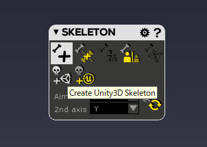

Akeytsuでボーン+リギング 操作法 ver1.x
概要
Steamで発売してて手軽に買えるようになったねAkeytsu！
で、1.x系はちょいちょいUIが変わってるので書き直すぞ。
概念
・ジョイント(ボーン)を追加することができる
・モデルに対してジョイントをセット(bind)することができる(Skinning)
・モデルに対してジョイントをbindするとバンクにBind Poseが生成される
・モデルに対して、ボーンの追従度をセットすることができる
ざっくりした操作方法
1.ボーンを作る
2.ボーンを選択状態にする -> モデルを選んでbindする
3.ボーンに対してメッシュへの影響度合い荷重を割り当てる
4.モーションを作る
ところでAkeytsuにはUnity用のboneがデフォルトで用意されてるので、これは良いぞ。

1.新規にボーン(ジョイント)を作る
1.JOINT ウィンドウのCreateボタンを押し(or Jキーを押す)、画面のどこでもいいのでクリックすると、最初のボーンが作られる。
2.マウスを適当に動かした状態でクリックすると、先ほどのボーンと連続した新しいボーンが作られる。
これ以上ジョイントを作成したくない場合、JOINTウィンドウのCreateボタンを再度押す(or Jキーを押す)と、生成が止まる。
2.ジョイントを選択状態にする -> モデルを選んでbindする
v1.0.3からGUIが変わった。
0.CHARA BANK > 対象のキャラクター選択 > Skin & Checkを選択
1.PICKERから対象のボーンを選ぶ
2.shiftキーを押した状態で、TREE > 紐づけたいメッシュを選ぶ
3.SKIN ATELIER > +1ボタン でBind 開始
4.+2ボタンでBind完了。
以降、メッシュはボーンに従属するようになり、各ボーンに対してどれかのメッシュについての荷重をセットすることが可能になる。
メッシュの選択と荷重のセットのTips
SKIN ATELIERの機能がそのセットになっている。
・ボーンに対してbindしたメッシュ群の中でどのメッシュがどのボーンからどの程度影響を受けるかを設定できる。
・aキーでブラシモードに突入、再度aキーを押すとブラシモード解除。ブラシモード中はカメラを動かせない。
・ブラシツールではWeightやStrength、Sizeを変更しながらブラシで塗るように影響度をセットできる。ブラシなので表面のみを編集でき、裏まで貫通しない。
・右クリックで荷重のadd、左クリックで荷重のremoveができる。
・変更するときは、TREE > 各パーツを右クリックで、Lock Skin Weight とかを行うと、対象範囲だけをいじれて便利。ショートカットないのかな、、、
・途中でボーンの位置が気に食わなくなった場合、CHARA BANKのBind Poseを選択した状態でボーンの位置を動かすと、既存の荷重設定の影響を受けずにすむ。
ボーンの基本位置を編集するときはBind Pose、荷重を編集するときはSkin & Checkという切り分け。
・shiftを押しながらクリックでポイント選択、shift + dragで範囲選択、これはブラシと違い、裏表を関係なく貫通する。
・選択した状態の頂点に対して、SKIN ATELIERの縦長のボタンや、その右の荷重値ボタンを押すことで荷重を当てることができる。
・荷重が当たる対象はSKIN ATELIERウィンドウ下のボーン一覧で選択中のものになるので、複数ある場合は荷重を分散できる。
・ブラシのWeightやStrengthを下げることでグラデーション的に荷重をセットできるので、調整が簡単。
・CHARA BANK のSkin & Check選択時は各ボーンの回転や移動を0にすると Bind Pose 選択時の姿勢と一致するので、
Skin & Checkモードでボーンを動かしながら荷重を変更 -> 位置や回転に0を入れて姿勢を戻す といったことができる。大変便利。
荷重を付ける際の制約(MUST)
・すべての頂点は最低でも一つのジョイントの影響下にあること
みたいな制約がある。その制約を守らないと、頂点に振ってある荷重をゼロにすることができず、意図せず動いてしまう、みたいなことが起きる。
・これを満たすために、ボーンに対してメッシュをbindする際、root以外のboneを選択 -> メッシュを選択してbindすると、rootの一つ下のボーンにすべてのメッシュが荷重された状態になるので、楽。
v1になった時にこの「すべての荷重がbindした一番上のボーンに自動的にかかる」挙動になったようで、楽になった。